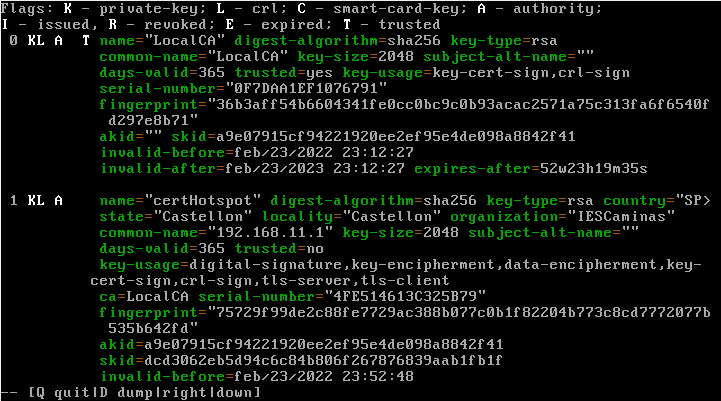
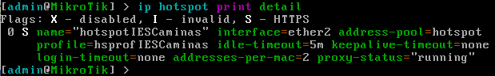
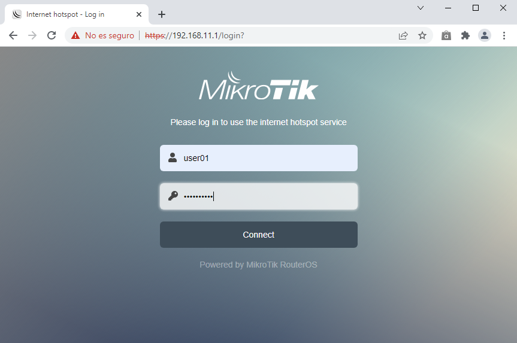

4.1 HotSpot con MikroTik
1. Introducción
En este apartado se describe la configuración de un router Mikrotik para que funcione como Hotspot en una organización, de manera que los usuarios conectados a un determinado puerto no podrán acceder más allá del router hasta que no se hayan autenticado con un usuario.
Para este caso de ejemplo, se va a trabajar con usuarios que se darán de alta en el servidor Hotspot.
2. Escenario
En la figura inferior, se describe el esquema de conexionado de la red que implementa el Hotspot. En este esquema hay 2 escenarios posibles desde el punto de vista del router Mikrotik:
- Trabajar con un mikrotik virtualizado como aparece en la figura superior.
- Trabajar con un router MikroTik físico. Para este caso, se puede configurar el hotspot sobre una interfaz inalámbrica para que los usuarios accedan por la misma.
Para este caso de ejemplo, se trabajará con un Mikrotik virtualizado con 3 adaptadores de red que se pueden observar en la figura inferior:
Figura 1. Adaptadores de red de la máquina virtual Mikrotik.
donde:
- El adaptador 1 (eno1) es el que conecta a la red LAN del router que da salida a internet (WAN).
- El adaptador 2 (intnet-A) a la red de usuarios que se van a conectar al hotspot.
- El adaptador 3 (intnet-B) es la que conecta la red interna que es donde estarían los servidores de la organización.
Es importante que los adaptadores de red sean PCnet-FAST III para evitar posibles problemas en la virtualización con virtual box.
Por lo que respecta al equipo cliente que utilizará el usuario para conectarse al hotspot, se utilizará un equipo Windows 10 Enterprise al cual se le habilitará un adaptador de red en la red interna intnet-A.
{kind=link}
Figura 2. Esquema de red Hotspot con Mikrotik.
3. Configuración en Mikrotik
Para acceder a la configuración de Mikrotik/RouterOS tenemos principalmente 4 formas:
- A través de la herramienta Winbox para entorno gráfico. Si se abre Winbox y se tiene conectado el equipo por cable, se podrá conectar a él (Mikrotik) incluso sin saber su dirección IP. Winbox permite conectar con un equipo RouterOS a través de su MAC.
- Usar el navegador Web para acceder al portal de administración. Para ello simplemente hay que introducir la IP del equipo en el navegador (http://IP ) y se podrá acceder a todo su menú de configuración al igual que desde Winbox.
- Acceder por SSH para usar la línea de comandos.
- Desde la consola del propio Mikrotik.
Para este caso, se va a utilizar la opción 4, es decir, todas las configuraciones se van a realizar desde la consola del Mikrotik.
La primera vez que se inicia sesión en el equipo Mikrotik virtualizado el usuario es admin y a continuación hay que establecer una contraseña.
Para el Mikrotik físico, se suele alimentar por POE en el primer puerto, y en ese mismo puerto tiene una IP en la configuración por defecto, la 192.168.88.1. Por tanto:
- Hay que acceder al router conectando un cable RJ-45 del PC al primer puerto del Mikrotik configurando la IP en el rango 192.168.88.0/24 para poder llegar hasta él.
- Otra opción es acceder con una búsqueda por MAC con Winbox. El usuario por defecto es "admin", sin contraseña.
Las etapas que se van a seguir para la configuración del Hotspot son las siguientes:
{kind=link}
1. Configuración de las interfaces de red
Como se han establecido 3 adaptadores de red en la máquina virtual, el equipo tiene 3 interfaces (tarjetas de red). En este escenario, ether1 es la interfaz que conecta con el router a Internet (WAN), ether2 la que se conecta con la red de usuarios y ether3 la que conecta con la red interna.
Figura 3. Lista de interfaces.
Para configurar la IP inicial de la interfaz ether1, hay que ejecutar el siguiente comando desde la terminal:
[admin@MikroTik] > ip address add address=192.168.0.2/24 interface=ether1 disabled=no
El siguiente paso es añadir la puerta de enlace por defecto (Default gateway). Para este escenario, el router que da acceso a Internet tiene la dirección IP 192.168.0.1.
[admin@MikroTik] > ip route add gateway=192.168.0.1 disabled=no
Figura 4. Configurar la puerta de enlace por defecto.
Por último, hay que añadir los servidores de DNS que se quieren establecer al router Mikrotik. Mas adelante, al añadir el servidor de DHCP, se podrán especificar los mismos servidores de DNS u otros diferentes, que serán los que usen los clientes de la red LAN. Esto se verá en pasos siguientes.
[admin@MikroTik] > ip dns set servers=8.8.8.8,8.8.4.4

Una vez configurada la IP, la ruta estática al default gateway y los DNS, se puede hacer ping desde el RouterOS al router principal ó a Internet, (a través de la IP o de nombre) para comprobar que todo funciona.
[admin@MikroTik] > ping 192.168.0.1 count=2
[admin@MikroTik] > ping google.es count=2
Figura 5. Comprobación del acceso a la WAN.
A continuación, hay que configurar la dirección IP de la interfaz de red de usuarios, al igual que se hizo anteriormente con la interfaz que conecta con Internet.
[admin@MikroTik] > ip address add interface=ether2 address=192.168.11.1 netmask=255.255.255.0
network=192.168.11.0 disabled=no
Figura 6. Añadir la red de usuarios, interfaz ether2.
A continuación, se realiza la misma para la dirección IP de la interfaz de red interna.
[admin@MikroTik] > ip address add interface=ether3 address=192.168.10.1 netmask=255.255.255.0
network=192.168.10.0 disabled=no
Figura 7. Añadir la red interna, interfaz ether3.
2. Configuración del servidor dhcp
El servidor de DHCP se encargará de configurar de forma automática las interfaces de red de los clientes para que puedan navegar de forma correcta. La IP de la interfaz de la red LAN es 192.168.11.1/24. Por tanto, en la red se podrán dar simultáneamente IPs desde 192.168.11.2 hasta 192.168.11.254 (254 equipos).
2.1 Crear pool
Primero, vamos a crear la pool para que nuestro servidor de DHCP en MikroTik sepa qué direcciones IP va a dar a los equipos. Hacemos clic en «IP«:
Primero, hay que crear un Pool (grupo) de direcciones IPs para que el servidor de DHCP en MikroTik sepa qué direcciones IP va a dar a los equipos, es decir, serán las que se enviarán a los clientes a través del servidor DHCP. La dirección IP de la interfaz de la red de usuarios es 192.168.11.1 y no se tendrá ningún otro equipo dentro de esa red con la IP reservada. Por tanto, se pueden dar IPs desde la IP inicial disponible y no ocupada 192.168.11.2 hasta la 192.168.11.254. El comando es el siguiente:
[admin@MikroTik] > ip pool add name=hotspot ranges=192.168.11.2-192.168.11.254
Figura 8. Crear pool de direcciones.
donde,
- name: Nombre identificativo para el pool.
- ranges: Rango de direcciones IP que se van a ofrecer por DHCP. En este caso, desde la dirección IP 192.168.11.2 hasta la 192.168.11.254.
2.2 Crear servidor dhcp sobre el pool
A continuación, hay que crear el servidor DHCP, para ello, se tiene el siguiente comando:
[admin@MikroTik] > ip dhcp-server add interface=ether2 address-pool=hotspot name=dhcp-hotspot
Figura 9. Añadir servidor dhcp.
donde,
- name: Nombre del servidor. Es el nombre identificativo que se quiera poner. No tiene mayor relevancia.
- interface: Es la interfaz donde funcionará el servidor DHCP. Sólo funcionará en la interfaz que se seleccione. En este caso, es la red de usuarios ether2.
- adress-pool. El pool que usará el servidor DHCP para saber qué direcciones tiene que ofrecer. Este pool la se ha creado anteriormente.
3. Añadir una nueva red en la interfaz de red de los usuarios hotspot
A continuación, hay que añadir una nueva red en la interfaz de la red de usuarios, es decir, la 192.168.11.1. El comando es el siguiente:
[admin@MikroTik] > ip dhcp-server add interface=ether2 address-pool=hotspot name=dhcp-hotspot
Figura 10. Añadir red en servidor dhcp.
donde,
- address: «Rango» de red que se usará para este caso 192.168.11.0/24.
- gateway: Dirección IP de la puerta de enlace para el rango de red que se ha definido. La dirección IP del equipo que dará salida a internet. En este caso, una dirección IP que tiene el propio MikroTik, 192.168.11.1.
- netmask: La máscara que se va a utilizar, en este caso, /24.
- dns-servers: Servidores DNS que usarán los equipos cuando obtengan dirección IP de este servidor DHCP.
4. Crear un certificado para que el acceso al Hotspot sea por https
Para que HTTPS funcione correctamente hay que especificar un certificado válido que Hotspot pueda usar. Se puede usar un certificado emitido por una Autoridad de certificación (CA) de confianza o se puede una propia CA raíz y generar certificados autofirmados.
Para este caso, se va a crear la propia CA raíz a partir del siguiente comando:
[admin@MikroTik] > certificate add name=LocalCA common-name=LocalCA key-usage=key-cert-sign,crl-sign
Figura 11. Crear certificado raíz.
A continuación, hay que firmar el certificado recién creado con el siguiente comando:
[admin@MikroTik] > certificate sign LocalCA
Figura 12. Firma del certificado raíz.
Una vez se tiene la CA raíz y se ha firmado, ya se puede crear el certificado para que el acceso de los usuarios al hotspot sea por https (conexión segura). El comando es el siguiente:
[admin@MikroTik] > certificate add name=cert-Hotspot common-name=192.168.11.1
country=SP state=Castellon locality=Castellon organization=IESCaminas trusted=yes
Figura 12. Crear certificado para Hotspot.
donde:
- name: Hay que ponerle un nombre, para ese caso, certHotspot.
- country, state, locality: Poner los datos administrativos de la localización de la organización, para ese caso, SP-Castellon-Castellon.
- organization: Nombre de la organización, para ese caso, IESCaminas.
- common-name: Hay que poner la dirección ip a la que se accederá, para este caso, la dirección es la configurada para la red de usuarios 192.168.11.1.
- trusted: Las opciones son yes o no. Si se establece como 'yes', el certificado se incluye "en la cadena de certificados de confianza", para este caso, dado que se quiere incorporar en la cadena de certificados de confianza, se establece a yes.
- key-type, key-size, days-valid: Estos datos están referidos al tipo de clave y tamaño y días de vigencia, para este caso, no se añaden en el comando ya que se usarán los que hay por defecto, es decir, RSA, 2048 y 365 días.
A continuación, hay que firmar el certificado con la CA raíz.
[admin@MikroTik] > certificate sign certHotspot ca=LocalCA
Figura 13. Firmar el certificado con el raíz.
Si se listan los certificados en modo detallado, se pueden observar los certificados que se han creado y que la cuenta de validez ya está en marcha, entre otras muchas cosas.
[admin@MikroTik] > certificate print detail

Figura 14. Listar los certificados que se tienen.
Si se observa la figura 14, se pueden comprobar los usos que se han configurado por defecto en el certificado, es decir, firma digital, clave para cifrar, etcétera.
Por último, hay que validar el certificado mediante el siguiente comando:
[admin@MikroTik] > certificate set trusted=yes certHotspot
Figura 15. Validar el certificado para Hotspot.
5. Configurar el Hotspot
En el proceso de configuración del Hotspot, hay que crear un perfil de servidor, un servidor y al menos un usuario para la autenticación.
Para configurar el Hotspot se utilizará el Wizard desde la terminal ejecutando el siguiente comando:
[admin@MikroTik] > ip hotspot setup
A continuación, hay que completar los siguientes datos:
- Hotspot Interface: ether2.
- Local Address of network: 192.168.11.1/24.
- Masquerade: yes.
- Address Pool of network: 192.168.11.2-192.168.11.254.
- Select certificate: certHotspot.
- IP address of SMTP server: 0.0.0.0
- DNS Servers: 8.8.8.8,8.8.4.4.
- DNS name:
- Name of local hotspot user: user01.
- Password: Camina/100.
Figura 16. Asistente para configurar el Hotspot.
Por defecto, se crea el perfil de servidor hsprof1 y el servidor hotspot1 con parámetros por defecto como por ejemplo, en el perfil del servidor el Login by como hhtp-chap, cookie y https. Por seguridad, se procede a cambiar los nombres y establecer otros valores al parámetro Login by ya que para este escenario, sólo se desea la autenticación por https.
En primer lugar, se cambia el nombre y el parámetro Login by en el perfil de servidor:
[admin@MikroTik] > ip hotspot profile set hsprof1 login-by=https name=hsprofIESCaminas
Figura 17. Modificar el perfil del servidor hotspot.
Al cambiar el nombre del perfil, este dato se actualiza automáticamente en el servidor Hotspot. A continuación, se procede a cambiar el nombre del servidor Hotspot:
[admin@MikroTik] > ip hotspot set hotspot1 name=hotspotIESCaminas
Figura 18. Modificar el nombre del servidor hotspot.
Comprobar Firewall
Si se accede al Firewall, se puede observar que el Wizard ha creado una serie de reglas incluyendo el masquerade para NAT para la red 192.168.11.0.
| Figura 19. Reglas del Firewall. | Figura 20. Reglas NAT. |
{kind=link}
{kind=link}
4. Verificaciones
Una vez se ha configurado el hotspot, se realizan una serie de verificaciones para ver que está todo correcto antes de comenzar con las pruebas de autenticación.
En primer lugar, se comprueban los usos del certificado raíz, período de validez, etcétera, mediante el siguiente comando:
[admin@MikroTik] > certificate print detail
Figura 21. Listar los certificados en detalle.
A continuación, se listan los perfiles de servidor para comprobar sobre el que se ha creado, el certificado que usará, dirección, etcétera.
[admin@MikroTik] > ip hotspot profile print
Figura 22. Listar los perfiles de servidores hotspot.
A continuación, se lista la información del servidor Hotspot que se ha creado:
[admin@MikroTik] > ip hotspot print detail

Figura 23. Listar los servidores hotspot.
Por último, lista el detalle de los usuarios donde se puede observar el tráfico que ha consumido el mismo, el tiempo de conexión, etcétera.
[admin@MikroTik] > ip hotspot user print detail
Figura 24. Listar los usuarios hotspot.
5. Pruebas de autenticación
Una vez verificado el funcionamiento del hotspot, ya se puede comenzar con las pruebas de autenticación, para ello, se utiliza un equipo Windows 10 con el adaptador de red conectado a la red interna intnet-A. El equipo está configurado con la obtención de la ip, dns y gateway de manera automática.
| Figura 25. Adaptador de red. | Figura 26. Configuración tcp/ip del equipo. |
Una vez configurada la interfaz de red, se abre un navegador y se pone la url https://192.168.11.1.
Inicio
Al ir a la url https://192.168.11.1, aparece una advertencia por la no confianza en el certificado que se está utilizando. Hay que pulsar sobre 'Configuración avanzada' y luego sobre 'Acceder a https://192.168.11.1 (sitio no seguro)'.
 |
{kind=link}
Pantalla de login
Aparece una nueva pantalla con la ventana de inicio de sesión. En la figura inferior derecha, se ha modificado el fichero html login, para adecuarlo a este escenario.
|  |
{kind=link}
{kind=link}
Estado
Una vez se ha realizado la autenticación con éxito, aparece una pantalla de estado donde se puede comprobar la dirección ip que se ha proporcionado al equipo, el tiempo conectado, etcétera. Si se pulsa el botón 'Cerrar sesión', se cierra la sesión con el hotspot. Se ha modificado el fichero html status para adecuarlo a este escenario.
En el siguiente vídeo se realiza un repaso a la configuración del hotspot mediante winbox y se realizan las pruebas con un cliente Windows 10 Enterprise.
| Vídeo 1. Configurar HotSpot en Mikrotik. | Vídeo 2. Configurar páginas del HotSpot. |
6. Referencias
- Github- Comandos utilizados en el capítulo
- https://wiki.mikrotik.com/wiki/Manual:TOC
- https://wiki.mikrotik.com/wiki/Manual:System/Certificates
- https://wiki.mikrotik.com/wiki/Manual:IP/Hotspot
- https://wiki.mikrotik.com/wiki/Manual:IP/Hotspot/Profile
- https://wiki.mikrotik.com/wiki/Manual:IP/Hotspot/User
- https://wiki.mikrotik.com/wiki/Manual:IP/DHCP_Server
Obra publicada con Licencia Creative Commons Reconocimiento No comercial Compartir igual 4.0